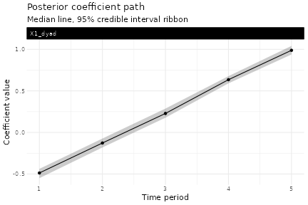
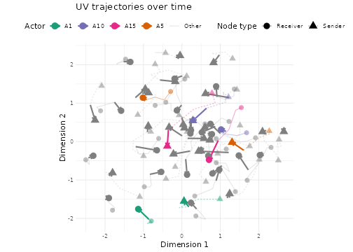
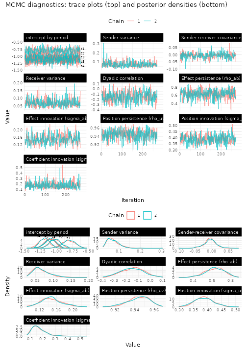
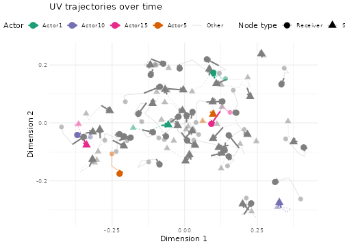
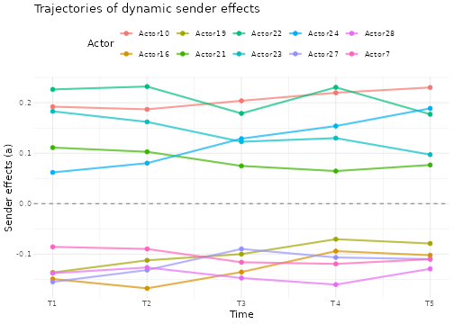

Dynamic Effects in Longitudinal AME Models
Cassy Dorff, Tosin Salau, Shahryar Minhas
2026-11-20
Source:vignettes/articles/dynamic_effects.Rmd
dynamic_effects.RmdIntroduction
Networks change. Allies drift apart, tastes evolve. The standard AME
model pools across time, assuming each actor has a fixed latent position
and fixed additive effects in every period. The lame
package provides three mechanisms for relaxing that assumption:
dynamic_uv for time-varying latent positions,
dynamic_ab for time-varying additive effects, and
dynamic_beta for time-varying regression coefficients. This
vignette explains what each option does, when to use it, and how to
interpret the results.
What Are Dynamic Effects?
The Static Baseline
In the standard AME model for longitudinal data, the tie between actors and at time is:
The covariates () can vary over time, but the sender effect , the receiver effect , and the latent positions and are constant: the model assumes a country’s position in the latent “sanctioning space” is the same in 1993 as in 2000.
Dynamic Latent Positions (dynamic_uv = TRUE)
When you set dynamic_uv = TRUE, each actor’s latent
position evolves over time according to an AR(1) process:
Note the innovation parameterisation:
is the variance of the period-to-period innovation, not the
marginal/stationary variance of
(which is
),
and fit$sigma_uv holds posterior draws of the innovation
standard deviation. For symmetric fits it is not
estimated: the unit-variance gauge fixes
,
and fit$sigma_uv is that function of the
draws. The autoregressive parameter
,
estimated from the data, controls persistence: near 1 means positions
change slowly, near 0 means they are essentially re-drawn each period.
Use this when the underlying community structure is evolving – alliances
shift, trading blocs realign.
Dynamic Additive Effects (dynamic_ab = TRUE)
When you set dynamic_ab = TRUE, each sender and receiver
effect is a per-actor level plus a zero-mean AR(1) deviation:
The level
is pooled over every period, and its variance across actors is the
va that summary() reports (vb for
the receiver levels). The deviation carries the dynamics:
fit$rho_ab is its persistence and fit$sigma_ab
holds draws of its innovation standard deviation, with the stationary
variance
as the prior on the first-period deviation. The marginal variance of a
per-period effect is therefore
,
and because
describes movement around a level, on short panels it reads lower than
the persistence of the raw effect path. Unless you set
prior$sigma_ab_scale, its scale is fixed before sampling
from the prior mean of the active level variances and
prior$rho_ab_mean, so per-period deviations shrink toward
the actor’s level unless the data insist; on sparse binary panels this
is what keeps the effects from chasing single cells. The stored paths
fit$a_dynamic and fit$b_dynamic are the full
effects
and
.
Substantively, dynamic_ab captures changes in how much an
actor participates, not in who they connect with (that is
dynamic_uv’s territory). The two can be used alone or
together; dynamic_ab is often the place to start, since
changes in overall activity are common and relatively easy to
estimate.
The effects of every period sum to zero across actors, so a shift
common to all actors in one period (the whole network busier in period
)
cannot sit in them. Under dynamic_ab = TRUE the intercept
therefore becomes a dynamic coefficient automatically (a
dynamic_beta block of its own, added to whatever
dynamic_beta names, and a random walk unless
dynamic_beta_kind is "rw2" or
"matern32", so its forecasts hold the last level), and it
carries the period means: fit$BETA is then a draws x
coefficients x periods array and coef(fit)["intercept", ]
is the intercept path. fit$dynamic_intercept_from_ab
records that the rule applied.
Dynamic Regression Coefficients (dynamic_beta)
The third option lets the regression coefficients themselves evolve.
With dynamic_beta = TRUE (or a subset like
dynamic_beta = "dyad"), each selected coefficient follows
an AR(1) around its own long-run mean
:
where
is the block of coefficient
(intercept / dyad / row / col), so coefficients in a block share
and
,
while the design-based scale
(a
-prior
analogue) keeps each innovation variance commensurate with the data. The
first period is drawn from the stationary law around
,
and
has the prior of a static coefficient; its posterior is in
fit$mu_beta and fit$MU_BETA, and forecasts of
the coefficient revert to it. The whole time path of
is drawn jointly via forward-filter / backward-sample (FFBS; Carter
& Kohn 1994). One storage difference from dynamic_uv /
dynamic_ab: fit$sigma_beta and
fit$rho_beta hold last-iteration scalars, while the full
posterior draws live in fit$SIGMA_BETA and
fit$RHO_BETA – summarise those
(e.g. colMeans(fit$SIGMA_BETA)).
dynamic_beta accepts FALSE (default),
TRUE (all coefficients), block shortcuts
("intercept", "dyad", "row",
"col") or coefficient names, integer column indices, or a
length-p logical mask; see ?lame. When the
intercept (or a nodal coefficient) is dynamic, an automatic sum-to-zero
constraint on a (and b) keeps everything
jointly identified. dynamic_beta works for every family,
unipartite and bipartite, directed and symmetric, and combines with
dynamic_ab / dynamic_uv.
A worked dynamic_beta example
Simulate a small longitudinal network where a single dyadic
covariate’s effect grows linearly over time, and fit with
dynamic_beta = "dyad".
library(lame)
set.seed(2026)
n_db <- 15
T_db <- 5
beta_t_true <- seq(-0.5, 1.0, length.out = T_db) # truth: rising effect
X_db <- replicate(T_db, matrix(rnorm(n_db * n_db), n_db, n_db), simplify = FALSE)
Y_db <- vector("list", T_db)
for (t in seq_len(T_db)) {
Yt <- beta_t_true[t] * X_db[[t]] + matrix(rnorm(n_db * n_db, 0, 0.4), n_db, n_db)
diag(Yt) <- NA
rownames(Yt) <- colnames(Yt) <- paste0("a", seq_len(n_db))
Y_db[[t]] <- Yt
}
names(Y_db) <- paste0("t", seq_len(T_db))
X_db_arr <- lapply(X_db, function(x) array(x, c(n_db, n_db, 1)))
fit_db <- lame(
Y_db,
Xdyad = X_db_arr,
family = "normal",
R = 0,
nscan = 200,
burn = 50,
odens = 5,
dynamic_beta = "dyad",
verbose = FALSE
)
# fit$BETA is an [n_stored x p x T] array
dim(fit_db$BETA)
#> [1] 80 2 5
# coef() gives a p x T matrix of posterior means
coef(fit_db)
#> t1 t2 t3 t4 t5
#> intercept -0.008732057 -0.008732057 -0.008732057 -0.008732057 -0.008732057
#> X1_dyad -0.487500970 -0.124287971 0.229302499 0.632750708 0.989391697
# 95% credible intervals, one row per coefficient and period
head(confint(fit_db), 8)
#> 2.5% 97.5%
#> intercept[t1] -0.03344747 0.01328026
#> X1_dyad[t1] -0.55017014 -0.43839113
#> intercept[t2] -0.03344747 0.01328026
#> X1_dyad[t2] -0.18066401 -0.07348713
#> intercept[t3] -0.03344747 0.01328026
#> X1_dyad[t3] 0.17742945 0.28710450
#> intercept[t4] -0.03344747 0.01328026
#> X1_dyad[t4] 0.59086680 0.67738465Reading the coefficients. With
dynamic_beta active, fit$BETA is a 3-D
[n_stored, p, T] array, one slice per period.
coef(fit) summarises it: a [p, T] matrix of
posterior means for a dynamic fit and a length-p vector for
a static one, so the same call works on both. To summarise the draws by
hand, keep the period dimension:
apply(fit$BETA, c(2, 3), mean).
The posterior means for X1_dyad follow the simulated
ramp beta_t_true = c(-0.5, -0.125, 0.25, 0.625, 1.0): the
largest gap between the two over the five periods is 0.021.
Choosing a prior family: dynamic_beta_kind
lame() exposes dynamic_beta_kind for
selecting the prior family on the time-varying coefficients:
Mean-reverting coefficient? Use the default
dynamic_beta_kind = "ar1". Permanent / unit-root drift (no mean reversion)? Use"rw1". Smooth with curvature (second-order smoothness)? Use"rw2". Smooth with a known length-scale of variation? Use"matern32"(set the scale viaprior = list(matern32_length_scale = ...); defaults tomax(2, T/4)). After an AR(1) fit,summary(fit)checks the posterior on and recommends"rw1"when it is concentrated at or above 0.97 ("rw2"if acceleration matters).
"random_walk" is an alias for "rw1".
"rw2" and "matern32" draw the whole path in
one joint Gaussian update; ?lame gives their cost per
iteration. Refitting fit_db under each kind and comparing
the recovered X1_dyad path against the truth:
kinds <- c("rw1", "rw2", "matern32")
paths <- sapply(kinds, function(k) {
fit_k <- lame(
Y_db,
Xdyad = X_db_arr,
family = "normal",
R = 0,
nscan = 200,
burn = 50,
odens = 5,
dynamic_beta = "dyad",
dynamic_beta_kind = k,
prior = if (k == "matern32")
list(matern32_length_scale = 2) else NULL,
verbose = FALSE
)
coef(fit_k)["X1_dyad", ]
})
round(
rbind(
ar1 = coef(fit_db)["X1_dyad", ],
t(paths),
truth = beta_t_true
),
3
)
#> t1 t2 t3 t4 t5
#> ar1 -0.488 -0.124 0.229 0.633 0.989
#> rw1 -0.488 -0.122 0.228 0.637 0.986
#> rw2 -0.476 -0.133 0.230 0.626 0.993
#> matern32 -0.482 -0.124 0.228 0.630 0.987
#> truth -0.500 -0.125 0.250 0.625 1.000All four kinds recover the ramp: the largest gap between any estimate in the table and the truth is 0.024. On a smooth, evenly spaced trend the priors agree in-sample; they separate when the data have the feature each one models (mean reversion, permanent drift, curvature), so choose with the decision list above.
When time_index is supplied with unequal gaps, the AR(1)
/ RW1 conditional variance is scaled by the gap (suppressing
for readability):
so quarterly-then-annual data gets the correct prior; "rw2"
and "matern32" support unequal gaps through their joint
precision-matrix construction.
# observation times 1, 2, 4, 8, 16 (doubling gaps)
fit_gaps <- lame(
Y_db,
Xdyad = X_db_arr,
family = "normal",
R = 0,
nscan = 200,
burn = 50,
odens = 5,
dynamic_beta = "dyad",
time_index = c(1, 2, 4, 8, 16)[seq_len(T_db)],
verbose = FALSE
)
fit_gaps$time_index
#> [1] 1 2 4 8 16
round(coef(fit_gaps), 3)
#> t1 t2 t3 t4 t5
#> intercept -0.014 -0.014 -0.014 -0.014 -0.014
#> X1_dyad -0.480 -0.125 0.232 0.638 0.991Hierarchical pooling: dynamic_beta_pool
When two or more coefficient blocks are dynamic, each block has its
own AR(1) hyperparameters by default. On a short panel
()
a single block carries little information about its own persistence and
innovation scale, and dynamic_beta_pool lets the blocks
share it by shrinking the block-level hyperparameters toward a common
mean: "rho" for common persistence, "sigma"
for a common innovation scale, "both" for full pooling –
e.g. lame(..., dynamic_beta = c("intercept", "dyad"), dynamic_beta_pool = "both").
With a single dynamic block the hierarchical layer is skipped entirely
and the fit is identical to the default "none". See
?lame for the diagnostic comparison of pooled vs
independent hyperparameter posteriors.
Per-actor time-varying slopes:
dynamic_beta_per_actor
For questions about whether one actor responds to a covariate
differently than another – and whether that gap evolves – set
dynamic_beta_per_actor = "row" (or "col") and
pick the covariate via per_actor_covariate_idx,
e.g. lame(..., dynamic_beta_per_actor = "row", per_actor_covariate_idx = 1L).
Deviations are sum-to-zero centred at every period, so the population
coefficient stays in coef(fit) while the per-actor
deviations land in fit$THETA_ACTOR (and their posterior
means in fit$theta_actor_mean, labelled by actor and
period). See ?per_actor_slopes.
Diagnosing your dynamic fit
summary(fit) prints the Dynamic coefficients per
period block and the per-block posterior-mean
rho_beta, and recommends
dynamic_beta_kind = "rw1" when a block’s posterior on
is concentrated at or above 0.97.
detect_change_point(fit) is a path diagnostic. It scales
each coefficient’s largest one-period change by its fitted innovation
standard deviation, including the covariate-design scale, and compares
it with reference paths that have the same number of periods, start from
the first state of the same posterior draw and follow its persistence
and innovation scale. The bf column is a tail ratio between
zero and twenty, not a Bayes factor. At the default
threshold_bf it flagged at most 5% of simulated panels
whose coefficient followed a smooth path or the fitted law, and a step
of 1.2 in most panels of eight or more periods but in about a fifth of
those with four or five (?detect_change_point gives the
rates by panel length).
detect_change_point(fit_db)
#> coef bf m_post_mean m_prior_q95 t_hat warn
#> 1 X1_dyad 0 1.460523 2.765587 4 FALSEThe ramp in fit_db is smooth, and the output says so:
warn is FALSE. Use large tail ratios to select
paths for closer inspection; t_hat is the period in which
the largest jump most often falls. The reference paths are defined for
equally spaced AR(1) and RW1 coefficients. For prior elicitation
before fitting,
dynamic_beta_prior_summary(n_periods = 10, kind = "ar1")
simulates coefficient paths from the prior on
and
,
with
.
fit$sampler_health counts, for each sampler step, the
proposals that fell outside a prior bound
(prior$uv_max_abs, prior$G_max). These are
ordinary Metropolis rejections, and summary() states their
share of sweeps when it is one percent or more. Its
numerical_failures column is zero in every returned fit.
Between-chain agreement and effective sample sizes are in
fit$rhat, described below.
Temporal-trend posterior-predictive check:
gof_temporal()
Where detect_change_point() targets
coefficients,
gof_temporal(fit, stat = "density", n_rep = 200) targets
the network statistic itself: it fits a linear time trend to a
chosen statistic (density / mean / reciprocity / transitivity), computes
the same slope on simulate(fit) replicates, and returns a
two-sided posterior-predictive p-value; small p_pp (below
0.05) means the observed trend is incompatible with the fitted model.
Reach for it when the substantive statistic drifts across the panel; the
overview vignette has a worked example,
and ?gof_temporal the reference.
Inspecting the priors actually in effect:
prior_summary()
prior_summary(fit) prints the hyperparameters actually
used, defaults filled in – for a dynamic fit that includes the per-block
AR(1) priors alongside the variance components and the g-prior on
beta. Run it once per fit to confirm that a
prior = list(...) override took effect; see
?prior_summary and the cross-sectional vignette for the general
tour.
Multi-chain
via lame_parallel() and
rhat_dynamic_beta()
lame() runs two chains by default and compares them
before it returns: fit$rhat lists the
and effective draws of every monitored quantity. For a statistic on the
whole per-period coefficient path, fit several chains with
lame_parallel(..., n_chains = 4, combine_method = "list")
and call rhat_dynamic_beta() on the resulting list. It
returns rhat_mvt, a multivariate statistic that catches
chains agreeing period by period while disagreeing on the trajectory,
and rhat_max_univariate; quote a path when both are below
1.01. For the fit_db model, four chains of the default
length give rhat_mvt = 1.003 and
rhat_max_univariate = 1.001 for X1_dyad.
combine_ame_chains() pools chains and routes through
posterior::summarise_draws() for per-(coefficient, period)
ESS. ame_parallel() is the cross-sectional twin; see
?rhat_dynamic_beta, ?lame_parallel, and the cross-sectional vignette.
Forecasting
predict(fit, h = K) propagates the joint posterior state
forward
periods, retaining uncertainty in the paths and their hyperparameters.
Each coefficient is forecast by its own kind on equally spaced periods:
an AR(1) coefficient reverts to its long-run mean, an RW1 coefficient
holds its last level, an RW2 coefficient extends its last slope and a
Matern 3/2 coefficient returns toward zero over its length scale.
Per-actor slopes (dynamic_beta_per_actor) describe the
fitted periods. The forecasting vignette
covers forecast scales, per-draw arrays, credible intervals,
counterfactual covariates, exposure offsets and the choice between AR(1)
and RW1.
Visualising the coefficient path: autoplot.lame
For a fit with dynamic_beta active,
autoplot(fit) returns a ggplot ribbon plot per
coefficient (posterior median line, 95% interval, faceted by
coefficient). Under dynamic_beta = "dyad" the intercept
remains static, so pass coefs = to restrict the plot to the
genuinely time-varying coefficients:
library(ggplot2)
autoplot(fit_db, coefs = "X1_dyad", probs = c(0.025, 0.5, 0.975)) +
labs(
title = "Posterior coefficient path",
subtitle = "Median line, 95% credible interval ribbon",
x = "Time period", y = "Coefficient value"
)
LOO / WAIC via save_log_lik = TRUE
Pass save_log_lik = TRUE and lame attaches
a [n_stored, n_obs] pointwise log-likelihood matrix to
fit$log_lik, which loo::loo(fit) and
loo::waic(fit) read directly. The example fits independent
residuals (dcor = FALSE), so each observed cell is one
likelihood factor:
fit_ll <- lame(
Y_db,
Xdyad = X_db_arr,
family = "normal",
R = 0,
dcor = FALSE,
nscan = 2000,
burn = 500,
odens = 25,
dynamic_beta = "dyad",
save_log_lik = TRUE,
verbose = FALSE
)
dim(fit_ll$log_lik) # [n_stored, n_observations]
loo_db <- loo::loo(fit_ll)
print(loo_db)Run as written, the fit passes the chain comparison and
loo() returns elpd_loo = -502.4 (SE 22.7) over
the 1050 observed cells, with every
Pareto-
below 0.5. If the matrix would not fit in RAM,
save_log_lik = "chunked" streams it to disk (see the forecasting vignette).
loo() and waic() apply to
normal, binary, poisson and
explicit-cutpoint ordinal (ordinal_cutpoints = "explicit")
fits whose observed cells are separate likelihood factors: directed fits
with dcor = FALSE, symmetric fits (each unordered dyad
counted once) and bipartite fits. fit$log_lik_contract
records the scale, observation unit, numerical method and factorization
of the saved scores. Capped binary (cbin), fixed-rank
nomination (frn) and data-induced ordinal fits, and
directed fits with residual dyad correlation, are compared with the
goodness-of-fit checks in Comparing Model Specifications below;
log_lik_method in ?lame describes the
diagnostic scores they can save.
Prior Specifications
The AR(1) coefficients and innovation variances have these default priors:
-
for every family, kind and mode. The data see
only, so the draws are stored with
.
Explicit
rho_uv_meanandrho_uv_sdsettings override the default. - , slightly less persistent
-
,
independently of
:
the prior is on the stationary variance of a coordinate path, so the
innovations shrink as the persistence grows and a persistent path is not
pulled toward a lower
(
prior$uv_var_shape,prior$uv_var_scale; settingsigma_uv_shapeorsigma_uv_scaleputs the inverse gamma on itself instead, which the"t"kind keeps as its default, ). For the binary, Poisson, ordinal, cbin and frn families the stationary variance is also bounded byprior$uv_var_cap(default 4) -
with a scale
fixed before sampling. By default it uses the prior mean of the active
level variances,
,
times
.
Set
prior$sigma_ab_scaleto supply the scale explicitly, and inspectfit$sigma_ab_prior_scaleorprior_summary(fit)for the value used.
All can be customized via the prior argument
(e.g. prior = list(rho_beta_mean = ..., sigma_beta_scale = ...))
if you have strong beliefs about the rate of change.
Genuine Dynamics: What They Look Like
We start with an example where dynamics are truly present: 25 actors over 5 periods whose latent positions evolve via an AR(1) with and innovation SD . Initial positions are drawn at SD 1.5 – above the implied stationary SD of about 0.57 – seeding strong latent structure that drifts toward stationarity, with a negative intercept giving realistic density (roughly 30%).
library(lame)
set.seed(6886)
n_dyn <- 25
n_per <- 5
R_dyn <- 2
# evolving latent positions with AR(1) dynamics
U <- matrix(rnorm(n_dyn * R_dyn, 0, 1.5), n_dyn, R_dyn)
V <- matrix(rnorm(n_dyn * R_dyn, 0, 1.5), n_dyn, R_dyn)
Y_dyn <- list()
for (t in 1:n_per) {
if (t > 1) {
U <- 0.85 * U + matrix(rnorm(n_dyn * R_dyn, 0, 0.3), n_dyn, R_dyn)
V <- 0.85 * V + matrix(rnorm(n_dyn * R_dyn, 0, 0.3), n_dyn, R_dyn)
}
eta <- -1 + U %*% t(V)
Y_t <- matrix(rbinom(n_dyn * n_dyn, 1, pnorm(eta)), n_dyn, n_dyn)
diag(Y_t) <- NA
rownames(Y_t) <- colnames(Y_t) <- paste0("A", 1:n_dyn)
Y_dyn[[t]] <- Y_t
}
# two chains run by default and are compared before the fit is returned
fit_dyn_real <- lame(
Y_dyn,
R = 2,
dynamic_uv = TRUE,
dynamic_ab = TRUE,
family = "binary",
burn = 100,
nscan = 1000,
odens = 10,
verbose = FALSE,
plot = FALSE
)
summary(fit_dyn_real)
#>
#> ── Longitudinal AME model summary ──────────────────────────────────────────────
#>
#> ── Call
#> Y ~ a[i] + b[j] + rho*e[ji] + U[i,1:2] %*% V[j,1:2], family = 'binary'
#>
#> ── Model
#> • Time periods: 5
#> • Family: binary
#> • Mode: unipartite
#> • Dynamic latent positions: enabled (kind = ar1, rho_uv = 0.944)
#> • Dynamic additive effects: enabled (rho_ab = 0.629)
#> rho_ab: posterior sd 0.105 is 0.83 of the prior sd 0.126: the data barely
#> inform it.
#> • Dynamic regression coefficients: enabled (kind = rw1)
#>
#> ── Regression coefficients
#> Estimate StdError z_value p_value CI_lower CI_upper Rhat Threshold
#> intercept -1.039 0.058 <NA> <NA> -1.159 -0.932 1.005 1.05
#> ESS
#> intercept <NA>
#> ---
#> Signif. codes: 0 '***' 0.001 '**' 0.01 '*' 0.05 '.' 0.1 ' ' 1
#> ℹ Stars are a visual hint from the posterior mean / SD only; for inference use
#> the credible intervals.
#> ℹ intercept is a coefficient path: the row gives the mean level over the
#> periods and its interval, with no z or p-value. The periods are below.
#>
#> ── Dynamic coefficients per period
#> Mean Min Max Drift Drift_pct Dynamic
#> intercept -1.039 -1.183 -0.806 0.376 36.234 Y
#>
#> ── intercept by period
#> Estimate StdError CI_lower CI_upper
#> t1 -0.806 0.099 -1.010 -0.618
#> t2 -1.017 0.087 -1.182 -0.843
#> t3 -1.096 0.086 -1.286 -0.938
#> t4 -1.183 0.080 -1.336 -1.030
#> t5 -1.094 0.087 -1.259 -0.934
#>
#> ── Variance components
#> Estimate StdError Rhat Threshold ESS
#> va 0.073 0.030 1.001 1.05 422.050
#> cab -0.005 0.019 1.002 1.05 456.707
#> vb 0.067 0.025 0.998 1.05 452.698
#> rho -0.148 0.096 1.009 1.05 314.102
#> va = sender variance, cab = sender-receiver covariance, vb = receiver
#> variance, rho = dyadic correlation
#> Under `dynamic_ab`, va and vb are the variances of the actor levels; rho_ab
#> and sigma_ab describe the per-period deviations around them.
#> ℹ Threshold is the R-hat the between-chain gate held each monitored quantity
#> to: 1.05, or the R-hat that settled chains with the same effective draws
#> reach by chance, if larger.
#> ✔ The chains agree on every monitored quantity (R-hat at most its threshold, with enough effective draws to compare).The trajectory plot shows how actors move through the latent space.
With more than eight actors, pass highlight = a few actor
names to colour those paths (ColorBrewer Dark2) and grey out the rest.
With genuine temporal structure, the highlighted paths trace short,
coherent arcs rather than random jumps:

lame() ran two independently seeded chains and compared
them before returning the fit: the last line of the summary above
reports that they agree on every monitored quantity, and
fit_dyn_real$rhat holds the R-hat and effective draws of
each. trace_plot() shows the same chains. Under the binary
(probit) family the error variance ve is fixed at 1 for
identification, so exclude it by its display label:
trace_plot(fit_dyn_real, exclude = "Error variance")
What Happens Without Temporal Structure?
To see how the dynamic model behaves when there is no signal, we fit the same model to independent networks – a null baseline showing what the prior alone produces when the data are uninformative.
set.seed(6886)
n <- 30
n_periods <- 5
# independent binary networks with no temporal structure
Y_list <- list()
for (t in 1:n_periods) {
Y_t <- matrix(rbinom(n * n, 1, 0.2), n, n)
diag(Y_t) <- NA
rownames(Y_t) <- colnames(Y_t) <- paste0("Actor", 1:n)
Y_list[[t]] <- Y_t
}
# a tight prior on rho_uv to show prior sensitivity
prior_custom <- list(
rho_uv_mean = 0.95, # expect very slow change in latent positions
rho_uv_sd = 0.05 # tight prior
)
fit_null <- lame(
Y = Y_list,
R = 2,
dynamic_uv = TRUE,
dynamic_ab = TRUE,
family = "binary",
prior = prior_custom,
burn = 100,
nscan = 1000,
odens = 10,
# keep per-draw latent trajectories for procrustes_align(per_draw = TRUE)
posterior_opts = list(save_UV = TRUE),
verbose = FALSE,
plot = FALSE
)
summary(fit_null)
#>
#> ── Longitudinal AME model summary ──────────────────────────────────────────────
#>
#> ── Call
#> Y ~ a[i] + b[j] + rho*e[ji] + U[i,1:2] %*% V[j,1:2], family = 'binary'
#>
#> ── Model
#> • Time periods: 5
#> • Family: binary
#> • Mode: unipartite
#> • Dynamic latent positions: enabled (kind = ar1, rho_uv = 0.918)
#> rho_uv: posterior sd 0.038 is 1.02 of the prior sd 0.038: the data barely
#> inform it.
#> • Dynamic additive effects: enabled (rho_ab = 0.585)
#> rho_ab: posterior sd 0.108 is 0.86 of the prior sd 0.126: the data barely
#> inform it.
#> • Dynamic regression coefficients: enabled (kind = rw1)
#>
#> ── Regression coefficients
#> Estimate StdError z_value p_value CI_lower CI_upper Rhat Threshold
#> intercept -0.871 0.025 <NA> <NA> -0.918 -0.821 1.002 1.05
#> ESS
#> intercept <NA>
#> ---
#> Signif. codes: 0 '***' 0.001 '**' 0.01 '*' 0.05 '.' 0.1 ' ' 1
#> ℹ Stars are a visual hint from the posterior mean / SD only; for inference use
#> the credible intervals.
#> ℹ intercept is a coefficient path: the row gives the mean level over the
#> periods and its interval, with no z or p-value. The periods are below.
#>
#> ── Dynamic coefficients per period
#> Mean Min Max Drift Drift_pct Dynamic
#> intercept -0.871 -0.893 -0.857 0.036 4.159 Y
#>
#> ── intercept by period
#> Estimate StdError CI_lower CI_upper
#> t1 -0.893 0.046 -0.984 -0.806
#> t2 -0.873 0.044 -0.960 -0.784
#> t3 -0.873 0.045 -0.957 -0.782
#> t4 -0.861 0.045 -0.946 -0.771
#> t5 -0.857 0.049 -0.954 -0.755
#>
#> ── Variance components
#> Estimate StdError Rhat Threshold ESS
#> va 0.027 0.009 0.999 1.05 800.00
#> cab -0.001 0.006 0.998 1.05 800.00
#> vb 0.027 0.008 1.000 1.05 800.00
#> rho 0.085 0.043 1.000 1.05 675.47
#> va = sender variance, cab = sender-receiver covariance, vb = receiver
#> variance, rho = dyadic correlation
#> Under `dynamic_ab`, va and vb are the variances of the actor levels; rho_ab
#> and sigma_ab describe the per-period deviations around them.
#> ℹ Threshold is the R-hat the between-chain gate held each monitored quantity
#> to: 1.05, or the R-hat that settled chains with the same effective draws
#> reach by chance, if larger.
#> ✔ The chains agree on every monitored quantity (R-hat at most its threshold, with enough effective draws to compare).We can compare the estimated persistence parameters across the two settings:
cat("Independent data rho_uv:", round(mean(fit_null$rho_uv), 3), "\n")
#> Independent data rho_uv: 0.918
cat("Correlated data rho_uv:", round(mean(fit_dyn_real$rho_uv), 3), "\n")
#> Correlated data rho_uv: 0.944The correlated fit used the default prior, centred at 0.7, and the
data moved the posterior mean of rho_uv up to 0.94. The
independent networks carry no period-to-period correlation, so the
posterior of rho_uv there (mean 0.92) keeps the spread of
the tight prior it was given, and summary(fit_null) says
so: the data barely inform it. Read rho_uv
together with that line of the summary and with the trajectory plots
(compare the coherent paths above with the erratic paths below).
Visualizing the Null Case
The trajectory plot for independent data looks different. Using the same highlight device as above, the highlighted paths jump from period to period without persistent direction, and the whole cloud clumps near the origin:
uv_plot(
fit_null,
plot_type = "trajectory",
highlight = c("Actor1", "Actor5", "Actor10", "Actor15")
)
The additive effects behave the same way: trajectories reflecting noise rather than real shifts in actor activity.
ab_plot(fit_null, effect = "sender", plot_type = "trajectory")
#> ℹ Showing top 5 and bottom 5 actors by average effect
#> → Use `show_actors` to specify actors to display
Comparing Model Specifications
A natural workflow is to fit several specifications and compare their goodness-of-fit. We use the independent data from above, where dynamic effects should add nothing.
# the four specifications on the same data
fit_static <- lame(
Y_list,
R = 2,
family = "binary",
burn = 30,
nscan = 150,
odens = 5,
verbose = FALSE,
plot = FALSE
)
fit_uv <- lame(
Y_list,
R = 2,
dynamic_uv = TRUE,
family = "binary",
burn = 30,
nscan = 150,
odens = 5,
verbose = FALSE,
plot = FALSE
)
fit_ab <- lame(
Y_list,
R = 2,
dynamic_ab = TRUE,
family = "binary",
burn = 30,
nscan = 150,
odens = 5,
verbose = FALSE,
plot = FALSE
)
fit_full <- lame(
Y_list,
R = 2,
dynamic_uv = TRUE,
dynamic_ab = TRUE,
family = "binary",
burn = 30,
nscan = 150,
odens = 5,
verbose = FALSE,
plot = FALSE
)For each specification we compute posterior predictive p-values (how often simulated statistics exceed observed): values near 0.5 indicate good fit; values pinned near 0 or 1 flag a statistic the model systematically under- or over-generates.
# posterior predictive p-values for each GOF statistic
compute_pvals <- function(fit) {
gof <- fit$GOF
sapply(names(gof), function(stat) {
mat <- gof[[stat]]
obs <- mat[, 1] # first column = observed
sims <- mat[, -1] # remaining = posterior predictive
mean(colMeans(sims) >= mean(obs))
})
}
gof_comparison <- rbind(
Static = compute_pvals(fit_static),
Dynamic_UV = compute_pvals(fit_uv),
Dynamic_AB = compute_pvals(fit_ab),
Full = compute_pvals(fit_full)
)
round(gof_comparison, 3)
#> sd.rowmean sd.colmean dyad.dep cycle.dep trans.dep
#> Static 0.900 0.983 0.517 0.600 0.250
#> Dynamic_UV 0.900 0.950 0.567 0.583 0.400
#> Dynamic_AB 0.917 1.000 0.617 0.600 0.267
#> Full 1.000 1.000 0.583 0.567 0.467sd.rowmean and sd.colmean sit near 1 for
every specification: the data were generated without actor
heterogeneity, and all four models carry additive effects. The
specifications are compared on the dyad.dep,
cycle.dep, and trans.dep columns. There every
value lies between 0.25 and 0.62, away from 0 and 1: each specification
reproduces the dependence statistics, and the dynamic terms add nothing
to the static fit, as expected for data generated without temporal
structure. The same four fits at nscan = 2000,
burn = 500, odens = 25 give values between
0.28 and 0.56 in those three columns.
When to Use Dynamic Effects
Use dynamic_ab when actors’ overall
activity levels change over time: countries cycle through isolationist
and interventionist periods, users churn in and out of platforms.
Use dynamic_uv when the underlying
community structure is shifting – a stronger claim: not just that actors
are more or less active, but that who connects with whom is
changing (political realignment, generational turnover).
Use dynamic_beta when a covariate’s
effect on tie formation changes over time while actors and
community structure are stable: the question is how strongly X
translates into Y, not who is connecting (dynamic_uv)
or who is active (dynamic_ab).
Use multiple together when several types of change
happen at once. This is the most flexible specification and the one that
asks most of the data; summary() says so when the data
leave a persistence parameter close to its prior.
Stick with static when you have few time periods, when the network is genuinely stable, or when you primarily care about average covariate effects.
Dealing with Rotational Indeterminacy
One subtlety of dynamic latent space models: the latent space is only
identified up to an orthogonal rotation at each time
point and at each posterior draw, so
averaging raw draws would shrink the positions toward zero.
lame() therefore reports positions that factor each
period’s posterior mean product
,
the identified quantity, and matches each period to the one before by
rotations that leave the product unchanged.
procrustes_align() applies the orthogonal-Procrustes
rotation (Gower 1975) to align each period’s positions to the previous
one; on these positions it changes nothing:
# align latent positions across time
aligned <- procrustes_align(fit_null)
str(aligned$U) # 3D array: actors x dimensions x time
#> num [1:30, 1:2, 1:5] -0.1774 0.3193 0.0303 0.247 0.1278 ...
#> - attr(*, "dimnames")=List of 3
#> ..$ : chr [1:30] "Actor1" "Actor10" "Actor11" "Actor12" ...
#> ..$ : NULL
#> ..$ : NULLRotation indeterminacy is also a per-draw property:
procrustes_align(fit, per_draw = TRUE) aligns every saved
draw’s trajectory across time (Hoff 2005; Sewell & Chen 2015), using
the per-draw cube a dynamic fit stores by default; see
?procrustes_align.
latent_positions(fit, align = TRUE) returns the aligned
positions as a tidy data frame ready for ggplot2 (custom
trajectory plots, overlaying external events). Because this fit saved
its per-draw trajectories, the posterior_sd column is
computed from the draws, each matched onto the reported positions,
rather than returned as NA:
lp <- latent_positions(fit_null, align = TRUE)
head(lp)
#> actor dimension time value posterior_sd type
#> 1 Actor1 1 1 -0.17737198 0.3068586 U
#> 2 Actor10 1 1 0.31926981 0.3378129 U
#> 3 Actor11 1 1 0.03030389 0.2892598 U
#> 4 Actor12 1 1 0.24701875 0.3355953 U
#> 5 Actor13 1 1 0.12780311 0.3441998 U
#> 6 Actor14 1 1 -0.07995805 0.2965998 UReferences
Hoff, PD (2021). Additive and Multiplicative Effects Network Models. Statistical Science 36, 34–50.
Hoff, PD (2005). Bilinear mixed-effects models for dyadic data. Journal of the American Statistical Association 100(469), 286–295.
Sewell, D. K., & Chen, Y. (2015). Latent space models for dynamic networks. Journal of the American Statistical Association, 110(512), 1646-1657.
Carter, C. K., & Kohn, R. (1994). On Gibbs sampling for state space models. Biometrika 81(3), 541–553. The FFBS algorithm behind
dynamic_beta_kind = "ar1"/"rw1".Gower, J. C. (1975). Generalized Procrustes analysis. Psychometrika 40(1), 33–51. The orthogonal-Procrustes rotation underlying
procrustes_align().